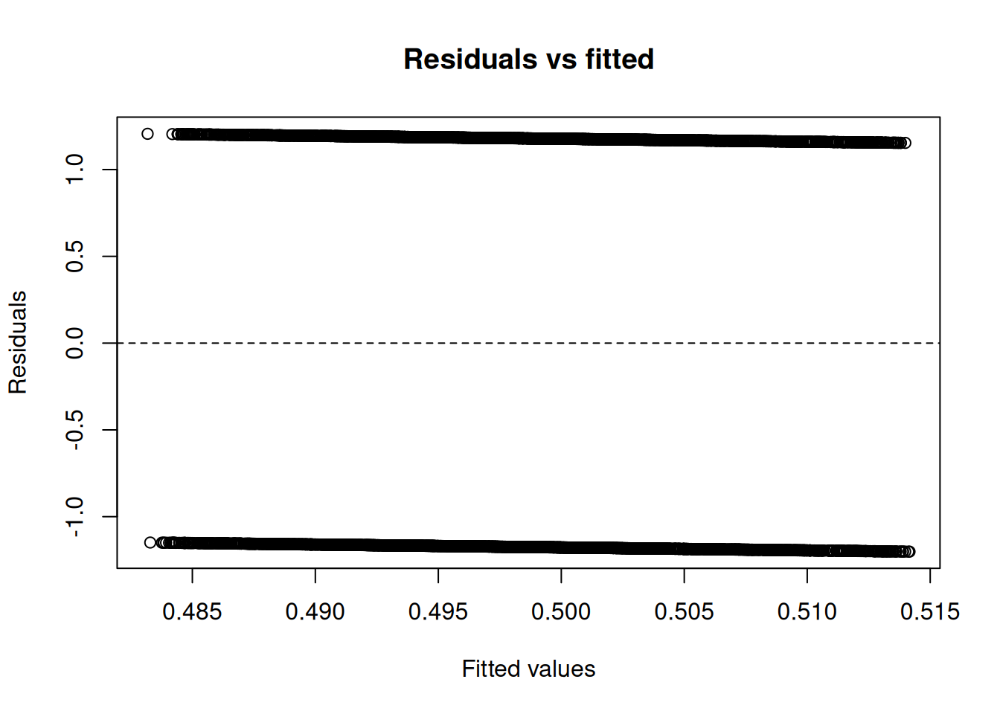

Code
data(rmb_datasets, package = "rmb")
rmb_datasets$study_design[rmb_datasets$object == "fit"]
#> [1] "Randomized Fracture Intervention Trial of alendronate in postmenopausal women."This vignette demonstrates an RMB2e-style modeling workflow for fit, with explicit demonstration of exploratory analysis, model specification, parameter estimation, adequacy checks, and scientific interpretation.
data(rmb_datasets, package = "rmb")
rmb_datasets$study_design[rmb_datasets$object == "fit"]
#> [1] "Randomized Fracture Intervention Trial of alendronate in postmenopausal women."data(fit, package = "rmb")
dat <- fit
dim(dat)
#> [1] 5324 9
head(dat)
#> treat age smoking frac_base bmd_base newvfx fitpy bmd_pctchg
#> 1 0 69.56332 0 1 7.284361 1 3.019849 -8.4051676
#> 2 1 76.44901 1 1 8.132111 0 3.000684 -6.1776071
#> 3 1 66.91033 1 1 9.450831 0 2.866530 1.6611280
#> 4 1 58.57084 1 1 9.937502 0 2.989733 -0.6319128
#> 5 1 74.59000 1 1 7.614042 0 2.967830 -7.4226828
#> 6 0 66.75154 2 1 10.329978 0 3.017112 -1.6717291
#> bmd_diff
#> 1 -197.8768
#> 2 -220.5728
#> 3 -254.9800
#> 4 -268.5289
#> 5 -206.6950
#> 6 -279.3317
summary(dat)
#> treat age smoking frac_base
#> Min. :0.0000 Min. :55.05 Min. :0.000 Min. :0.0000
#> 1st Qu.:0.0000 1st Qu.:64.00 1st Qu.:0.000 1st Qu.:0.0000
#> Median :0.0000 Median :68.33 Median :0.000 Median :0.0000
#> Mean :0.4987 Mean :68.27 Mean :0.568 Mean :0.3116
#> 3rd Qu.:1.0000 3rd Qu.:72.70 3rd Qu.:1.000 3rd Qu.:1.0000
#> Max. :1.0000 Max. :81.87 Max. :2.000 Max. :1.0000
#> bmd_base newvfx fitpy bmd_pctchg
#> Min. : 5.432 Min. :0.00000 Min. :2.478 Min. :-27.424
#> 1st Qu.: 8.509 1st Qu.:0.00000 1st Qu.:3.020 1st Qu.: -2.146
#> Median : 9.278 Median :0.00000 Median :4.038 Median : 1.302
#> Mean : 9.183 Mean :0.05522 Mean :3.849 Mean : 1.493
#> 3rd Qu.: 9.969 3rd Qu.:0.00000 3rd Qu.:4.487 3rd Qu.: 4.929
#> Max. :12.292 Max. :1.00000 Max. :4.819 Max. : 48.029
#> bmd_diff
#> Min. :-332.4
#> 1st Qu.:-269.2
#> Median :-250.4
#> Mean :-247.8
#> 3rd Qu.:-229.8
#> Max. :-145.7var_labels <- vapply(dat, function(x) {
lbl <- attr(x, "label")
if (is.null(lbl) || length(lbl) == 0 || all(lbl == "")) NA_character_ else paste(as.character(lbl), collapse = "; ")
}, character(1))
stats::setNames(var_labels, names(dat))
#> treat age
#> "Treatment assignment" "Calculated baseline age"
#> smoking frac_base
#> "Baseline smoking status" "History of vertebral fracture"
#> bmd_base newvfx
#> "Baseline femoral neck BMD" "New vertebral fracture"
#> fitpy bmd_pctchg
#> "Fit follow-up time (years)" "Percent change in BMD"
#> bmd_diff
#> "Change in BMD"For fit we ask: what is the association between a primary exposure and an outcome, after accounting for a plausible confounder?
# Variable-type helper functions are provided by the rmb package:
# `is_binary()` and `is_count()`.
candidate_vars <- names(dat)[vapply(dat, function(x) {
is.numeric(x) || is.factor(x) || is.logical(x)
}, logical(1))]
continuous_vars <- candidate_vars[vapply(dat[candidate_vars], function(x) {
is.numeric(x) && length(unique(stats::na.omit(x))) > 10
}, logical(1))]
binary_vars <- candidate_vars[vapply(dat[candidate_vars], is_binary, logical(1))]
count_vars <- candidate_vars[vapply(dat[candidate_vars], is_count, logical(1))]
outcome_var <- if (length(binary_vars) > 0) {
binary_vars[1]
} else if (length(continuous_vars) > 0) {
continuous_vars[1]
} else if (length(count_vars) > 0) {
count_vars[1]
} else if (length(candidate_vars) > 0) {
candidate_vars[1]
} else {
NA_character_
}
remaining_vars <- setdiff(candidate_vars, outcome_var)
exposure_var <- if (length(remaining_vars) > 0) remaining_vars[1] else NA_character_
confounder_var <- if (length(remaining_vars) > 1) remaining_vars[2] else NA_character_
model_family <- if (!is.na(outcome_var) && outcome_var %in% binary_vars) {
"binomial"
} else if (!is.na(outcome_var) && outcome_var %in% count_vars) {
"poisson"
} else {
"gaussian"
}
can_fit_model <- !is.na(outcome_var) && !is.na(exposure_var)
c(
outcome = outcome_var,
exposure = exposure_var,
confounder = confounder_var,
family = model_family,
can_fit_model = can_fit_model
)
#> outcome exposure confounder family can_fit_model
#> "treat" "age" "smoking" "binomial" "TRUE"We use treat as the outcome and age as the primary exposure, with smoking as a candidate confounder.
The goal of this worked example is to show how the chosen model family can answer the research question by quantifying the direction and strength of the exposure-outcome association after confounder adjustment.
if (!is.na(exposure_var) && !is.na(confounder_var)) {
cat(
"```{mermaid}
",
"flowchart LR
",
" C[", confounder_var, "] --> E[", exposure_var, "]
",
" C --> Y[", outcome_var, "]
",
" E --> Y
",
"```
",
sep = ""
)
} else if (!is.na(exposure_var)) {
cat(
"```{mermaid}
",
"flowchart LR
",
" E[", exposure_var, "] --> Y[", outcome_var, "]
",
"```
",
sep = ""
)
} else {
cat("Not enough variables to draw a DAG for this dataset.\n")
}flowchart LR
C[smoking] --> E[age]
C --> Y[treat]
E --> Yflowchart LR C[smoking] --> E[age] C --> Y[treat] E --> Y
We start by checking the analysis sample and the marginal distributions of the selected variables. This step demonstrates how we verify data support for modeling assumptions before fitting regression models.
analysis_vars <- unique(stats::na.omit(c(outcome_var, exposure_var, confounder_var)))
if (length(analysis_vars) == 0) {
analysis_df <- data.frame()
c(n_total = nrow(dat), n_complete = 0, p_complete = 0)
cat("No numeric, logical, or factor variables available for analysis.\n")
} else {
analysis_df <- dat[, analysis_vars, drop = FALSE]
analysis_df <- stats::na.omit(analysis_df)
c(
n_total = nrow(dat),
n_complete = nrow(analysis_df),
p_complete = nrow(analysis_df) / nrow(dat)
)
summary(analysis_df)
}
#> treat age smoking
#> Min. :0.0000 Min. :55.05 Min. :0.000
#> 1st Qu.:0.0000 1st Qu.:64.00 1st Qu.:0.000
#> Median :0.0000 Median :68.33 Median :0.000
#> Mean :0.4987 Mean :68.27 Mean :0.568
#> 3rd Qu.:1.0000 3rd Qu.:72.70 3rd Qu.:1.000
#> Max. :1.0000 Max. :81.87 Max. :2.000if (nrow(analysis_df) == 0 || is.na(exposure_var) || is.na(outcome_var)) {
plot.new()
text(0.5, 0.5, "No EDA plot: insufficient variables or complete cases")
} else if (is.numeric(analysis_df[[outcome_var]]) &&
is.numeric(analysis_df[[exposure_var]])) {
plot(
analysis_df[[exposure_var]],
analysis_df[[outcome_var]],
xlab = exposure_var,
ylab = outcome_var,
main = "Outcome vs exposure"
)
} else if (is.numeric(analysis_df[[outcome_var]])) {
boxplot(
analysis_df[[outcome_var]] ~ as.factor(analysis_df[[exposure_var]]),
xlab = exposure_var,
ylab = outcome_var,
main = "Outcome by exposure"
)
} else {
plot.new()
text(0.5, 0.5, "No simple EDA plot available for selected variables")
}
Following the GLM model-fitting process, we specify an unadjusted model and a model adjusted for the candidate confounder.
if (can_fit_model && nrow(analysis_df) > 0) {
if (inherits(analysis_df[[outcome_var]], "haven_labelled")) {
analysis_df[[outcome_var]] <- as.numeric(analysis_df[[outcome_var]])
}
if (inherits(analysis_df[[exposure_var]], "haven_labelled")) {
analysis_df[[exposure_var]] <- as.numeric(analysis_df[[exposure_var]])
}
if (!is.na(confounder_var) &&
inherits(analysis_df[[confounder_var]], "haven_labelled")) {
analysis_df[[confounder_var]] <- as.numeric(analysis_df[[confounder_var]])
}
if (is.logical(analysis_df[[outcome_var]])) {
analysis_df[[outcome_var]] <- as.integer(analysis_df[[outcome_var]])
}
if (is.logical(analysis_df[[exposure_var]])) {
analysis_df[[exposure_var]] <- as.integer(analysis_df[[exposure_var]])
}
if (!is.na(confounder_var) && is.logical(analysis_df[[confounder_var]])) {
analysis_df[[confounder_var]] <- as.integer(analysis_df[[confounder_var]])
}
if (model_family == "binomial") {
outcome_values <- sort(unique(stats::na.omit(analysis_df[[outcome_var]])))
if (length(outcome_values) == 2) {
analysis_df[[outcome_var]] <- as.integer(
analysis_df[[outcome_var]] == outcome_values[2]
)
}
}
formula_unadjusted <- stats::as.formula(paste(outcome_var, "~", exposure_var))
formula_adjusted <- if (!is.na(confounder_var)) {
stats::as.formula(paste(outcome_var, "~", exposure_var, "+", confounder_var))
} else {
formula_unadjusted
}
list(
family = model_family,
unadjusted = formula_unadjusted,
adjusted = formula_adjusted
)
} else {
formula_unadjusted <- NULL
formula_adjusted <- NULL
cat("Model specification skipped: insufficient variables or complete cases.\n")
}
#> $family
#> [1] "binomial"
#>
#> $unadjusted
#> treat ~ age
#>
#> $adjusted
#> treat ~ age + smokingHere we estimate unadjusted and adjusted models to show how confounder adjustment can change effect estimates and uncertainty.
fit_unadjusted <- NULL
fit_adjusted <- NULL
n_coef_display <- 6
if (!is.null(formula_unadjusted) && nrow(analysis_df) >= 20) {
fit_function <- if (model_family == "gaussian") stats::lm else stats::glm
fit_args <- if (model_family == "gaussian") {
list(data = analysis_df)
} else {
list(data = analysis_df, family = get(model_family, asNamespace("stats"))())
}
fit_unadjusted <- tryCatch(
do.call(fit_function, c(list(formula = formula_unadjusted), fit_args)),
error = identity
)
fit_adjusted <- tryCatch(
do.call(fit_function, c(list(formula = formula_adjusted), fit_args)),
error = identity
)
if (inherits(fit_unadjusted, "error") || inherits(fit_adjusted, "error")) {
cat("Model fitting did not converge for this variable set.\n")
} else {
coef_unadjusted <- stats::coef(summary(fit_unadjusted))
coef_adjusted <- stats::coef(summary(fit_adjusted))
print(coef_unadjusted[seq_len(min(n_coef_display, nrow(coef_unadjusted))), , drop = FALSE])
print(coef_adjusted[seq_len(min(n_coef_display, nrow(coef_adjusted))), , drop = FALSE])
}
} else {
cat("Parameter estimation skipped: fewer than 20 complete observations.\n")
}
#> Estimate Std. Error z value Pr(>|z|)
#> (Intercept) 0.309050324 0.311289704 0.9928061 0.3208044
#> age -0.004604095 0.004542155 -1.0136366 0.3107562
#> Estimate Std. Error z value Pr(>|z|)
#> (Intercept) 0.311137886 0.316759745 0.98225198 0.3259757
#> age -0.004622612 0.004571814 -1.01111103 0.3119633
#> smoking -0.001449766 0.040703815 -0.03561745 0.9715874We examine simple fit diagnostics to assess whether the selected model is adequate for inference in this dataset.
if (!is.null(fit_adjusted) && !inherits(fit_adjusted, "error")) {
model_comparison <- if (is.null(fit_unadjusted) || inherits(fit_unadjusted, "error") ||
identical(formula_unadjusted, formula_adjusted)) {
data.frame(model = "adjusted", AIC = stats::AIC(fit_adjusted))
} else {
data.frame(
model = c("unadjusted", "adjusted"),
AIC = c(stats::AIC(fit_unadjusted), stats::AIC(fit_adjusted))
)
}
model_comparison
plot(stats::fitted(fit_adjusted), stats::residuals(fit_adjusted),
xlab = "Fitted values",
ylab = "Residuals",
main = "Residuals vs fitted"
)
abline(h = 0, lty = 2)
} else {
cat("Model adequacy checks skipped because no fitted adjusted model is available.\n")
}
We interpret the adjusted exposure estimate directly in relation to the research question, focusing on direction, magnitude, and statistical uncertainty.
if (!is.null(fit_adjusted) && !inherits(fit_adjusted, "error")) {
coef_table <- summary(fit_adjusted)$coefficients
exposure_rows <- grep(paste0("^", exposure_var), rownames(coef_table), value = TRUE)
p_col <- intersect(c("Pr(>|t|)", "Pr(>|z|)"), colnames(coef_table))
if (length(exposure_rows) > 0 && length(p_col) > 0) {
target_row <- exposure_rows[1]
estimate <- unname(coef_table[target_row, "Estimate"])
p_value <- unname(coef_table[target_row, p_col[1]])
direction <- if (is.na(estimate) || abs(estimate) < 1e-10) {
"little"
} else if (estimate > 0) {
"a positive"
} else {
"a negative"
}
cat(
"Estimated exposure effect:", round(estimate, 3),
"(p =", signif(p_value, 3), ")\n"
)
cat(
"This suggests", direction, "association between", exposure_var,
"and", outcome_var, "in the adjusted model.\n"
)
} else {
cat("Inference summary unavailable for the selected exposure term.\n")
}
} else {
cat("Inference skipped because no fitted adjusted model is available.\n")
}
#> Estimated exposure effect: -0.005 (p = 0.312 )
#> This suggests a negative association between age and treat in the adjusted model.if (can_fit_model && !is.na(exposure_var) && !is.na(outcome_var) &&
!is.null(fit_adjusted) && !inherits(fit_adjusted, "error")) {
coef_table <- summary(fit_adjusted)$coefficients
exposure_rows <- grep(paste0("^", exposure_var), rownames(coef_table), value = TRUE)
p_col <- intersect(c("Pr(>|t|)", "Pr(>|z|)"), colnames(coef_table))
if (length(exposure_rows) > 0 && length(p_col) > 0) {
target_row <- exposure_rows[1]
estimate <- unname(coef_table[target_row, "Estimate"])
p_value <- unname(coef_table[target_row, p_col[1]])
direction <- if (is.na(estimate) || abs(estimate) < 1e-10) {
"little to no"
} else if (estimate > 0) {
"a positive"
} else {
"a negative"
}
evidence <- if (is.na(p_value)) {
"with uncertain statistical evidence"
} else if (p_value < 0.05) {
"with statistical evidence against the null"
} else {
"with limited statistical evidence against the null"
}
cat(
"Answer to the research question: in this dataset, the adjusted ", model_family,
" model estimates ", direction, " association between ", exposure_var,
" and ", outcome_var, " after accounting for ", confounder_var,
", ", evidence, ". These conclusions should be interpreted in light of study design, possible residual confounding, and measurement limitations.
",
sep = ""
)
} else {
cat("The fitted model does not provide a directly interpretable adjusted exposure coefficient for the selected research question.
")
}
} else {
cat("Scientific conclusions are limited because the dataset does not contain enough complete variables for the selected workflow.
")
}Answer to the research question: in this dataset, the adjusted binomial model estimates a negative association between age and treat after accounting for smoking, with limited statistical evidence against the null. These conclusions should be interpreted in light of study design, possible residual confounding, and measurement limitations.